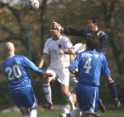
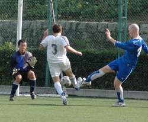
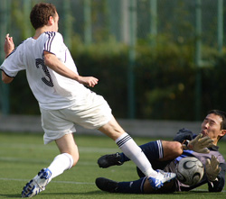

|
Hanno Misugidai, Saturday 20th October,
Sala recorded their highest ever league victory over a depleted Jets side on Saturday amongst the mountains of Hanno, in distant Saitama. It’s a nice little pitch though a bit on the short side.
Sala got out of the blocks quickly and piled the pressure on the Jets backline with neat, short passing and some pace on the flanks.
In fact there were so many chances in the opening fifteen minutes that it would be fair to say that Sala were extremely unlucky not to find themselves four or five goals to the good. Toby and Dhugal could each have had a first half hat trick, and on another day probably would have.
Dhugal it was who eventually gave Sala the lead, chipping the ball over the keeper on the half volley after good work in the build up from Toby.
Masa cut a lonely figure on the left flank, as most of Sala’s attacks went through Scott and then Sam as the half progressed. The second goal could not be found though, despite two headers from Guido and one from Dhugal at the end of the half, all of which should really have found the back of the net and given Lenny some return for a succession of quality deliveries. Jets on the other hand could do little else than clear the ball up the middle which was bread and butter for the heads of Guido and Clarkey.
The second half saw Sala let up a little for the first ten minutes or so, and fears about the lack of a killer second goal began to surface. It is at times like these that Sala are so often helped out by a flash of genius from Shige and that was the case again on Saturday, not once but twice.
The first was a superb shot from twenty-five yards that arced beautifully into the top corner and the second a piledriver on the half volley as an attempted clearance dropped to him on the edge of the box. And that was basically that as far as the result was concerned.

Not the scoreline though, as Sala ran in three more goals to add a bit of oomph to the ‘goals for’ column.
The fourth involved nice build up play involving Brookey, Dan and Charles, who slid the ball across the six yard line for Sam to tap in after a lung bursting run to get into position. Both Dan and Sam were up there in the MoM reckoning at the full time whistle with very gritty, hard running performances.
Guido then completed his hat-trick of narrowly missed headers, going inches wide from Brookey’s cross and at some point Toby came agonizingly close to connecting with a low cross at the back post.
The fifth came from a great through ball from Scott and good movement in the box from Giles, who did well to stay onside and receive the slide rule pass. He controlled it with the left, turned on a thrupenny bit and fired it home with the right.
The final goal was from Captain Brookey who latched on to a clever dummy from Charles, cut inside a defender and hit a chipped shot that the keeper could only help into the top corner.
A good day all round for Sala, and yet… but for apathetic finishing throughout the game it really could have been a cricket score.
Howzat!
Report by Lethargio
|